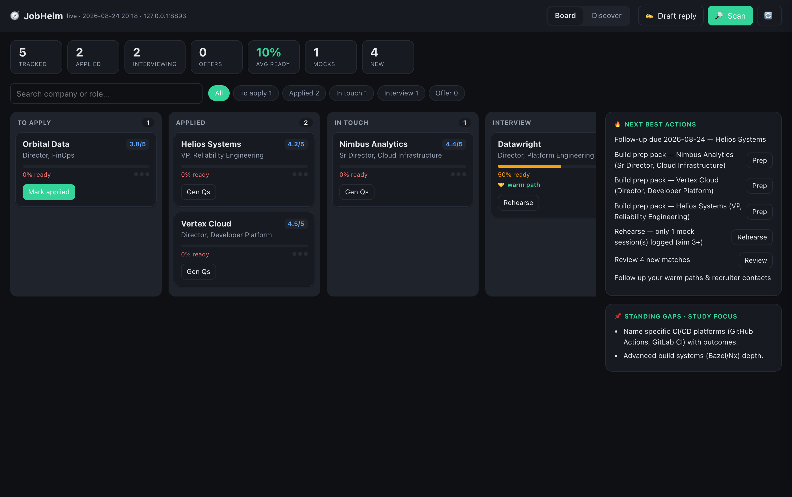
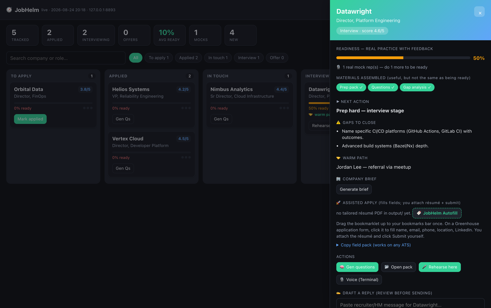

DeskMock is a local-first AI mock interviewer. It reads questions aloud, you speak your answers, and it coaches you with feedback and a scorecard — grounded in your real CV. Your voice never leaves your device.
$ python3 deskmock.py --speak --auto --role "Platform Director" --company "Acme" 🔊 Interviewer ▸ Walk me through the most recent platform you standardized for a large org. What were your criteria and the outcome? (dictate your answer — DeskMock reads it from the clipboard on Enter) 🎙 You ▸ We consolidated three Kubernetes estates into one paved-road platform; measured on DORA metrics and a 30% infra cost cut… 🤖 Feedback ▸ Strong outcome + metrics. Tighten with STAR: name the trigger and your specific decision. Power phrase: "single paved road, measured by change-fail rate." QUESTION ▸ How did you drive adoption across resistant teams? /done → scorecard · /repeat → hear it again · /skip
What is DeskMock?
Most AI mock-interview tools are cloud SaaS or need a real-time voice stack (LiveKit + cloud speech, often a GPU). That shuts out anyone who is privacy-conscious, offline-ish, or on modest hardware. DeskMock takes the opposite stance: keep the voice local, keep the brain swappable, keep it a single command.
On-device dictation captures your spoken answer and only text reaches the model — on your own key. Point the model at a local endpoint (vLLM / Ollama) and nothing leaves your machine at all.
say reads questions aloud
Local dictation → clipboard
Any OpenAI-compatible LLM
Transcripts saved locally
Single command
Get started
A single Python script — no dependencies to install. You need Python 3.9+ and an OpenAI-compatible API key (or a local model). Voice is optional; you can start by typing.
1 Get the code
2 Add an LLM key — grab one at openrouter.ai (create a key, add a few dollars of credit; a session costs pennies)
3 Run it — type your answers, using the bundled sample CV + JD
You'll get a question — type an answer, press Enter for feedback, and /done for your scorecard (/repeat, /skip too). Want it read aloud and hands-free? Add --speak and set up dictation — see the docs.
Why DeskMock
Everything that makes it useful, without giving up your privacy or your hardware.
On-device dictation transcribes your answer; only the text reaches the model. Point at a local LLM and nothing leaves your machine.
Any OpenAI-compatible endpoint — OpenRouter, vLLM, Ollama. Your key, your model choice, your cost.
Questions and coaching are built from your actual CV and the job description — never invented experience.
Per-answer feedback and power phrases, then a scorecard: clarity, structure, specificity, technical depth, executive presence.
Every session is saved locally as markdown so you can review answers and track how you improve.
No LiveKit, no cloud voice service, no GPU. A single command on modest hardware.
The command center
DeskMock rehearses you; JobHelm runs the search. In the same repo, it's a local dashboard for your entire pipeline — track every role, see honest prep-readiness, rehearse in-app, draft recruiter replies, and know the next best move. Same philosophy: your data, your machine, your key.
How it works
1See your whole pipeline

2Drill into any role

Shown with the bundled sample data — JobHelm renders this board the moment you clone. Readiness reflects real practice (a completed mock rep), not just prep files.
Every application as a card across stages, with search and stage filters. Click one to drill into readiness, gaps, and actions.
Per-role readiness counts actual practice (a mock with a scorecard), never mere prep files — so the number tells the truth.
Run a full mock interview in the browser — questions read aloud, type or dictate answers, feedback + scorecard, saved as a transcript.
Draft recruiter/HM responses in your voice with your contact details. Flags spam. Never auto-sends — you review and send.
Turns the scan firehose into a ranked shortlist of recent, in-location, on-target roles worth acting on.
Follow-ups due, prep gaps, and warm-path reminders — the short list of what to do today, surfaced for you.
Try it — a populated demo board, no key or data needed:
FAQ
No. Dictation happens on your device; only the transcribed text is sent to the LLM, on your own API key. If you point the model at a local endpoint (vLLM / Ollama), nothing leaves your machine at all.
No — no LiveKit, no cloud STT/TTS, no GPU. DeskMock uses your OS dictation for input and macOS say to read questions aloud. It runs on modest hardware as a single command.
Any OpenAI-compatible endpoint. The default is OpenRouter with deepseek/deepseek-v3.2 (cheap and reliable), but you can pass --model and --base-url to use anything, including a local model.
The read-aloud half uses macOS say plus a dictation tool, so voice is best on macOS today. The interview loop itself is cross-platform — on any OS you can type your answers and get the same coaching and scorecard.
Yes — DeskMock is open source under the MIT license. You only pay for your own LLM usage (or nothing, if you run a local model).
They're SaaS: your data and voice go to their servers, often behind a subscription and a heavy voice stack. DeskMock is local-first, private, swappable, and a single command — built for people who'd rather keep it on their own machine.